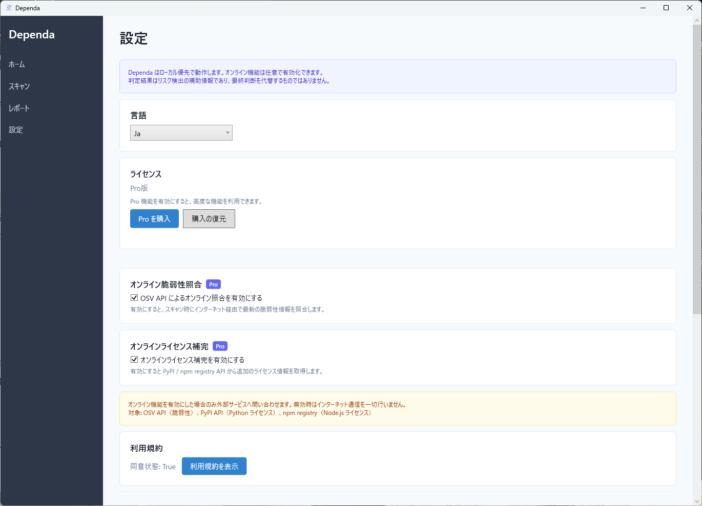
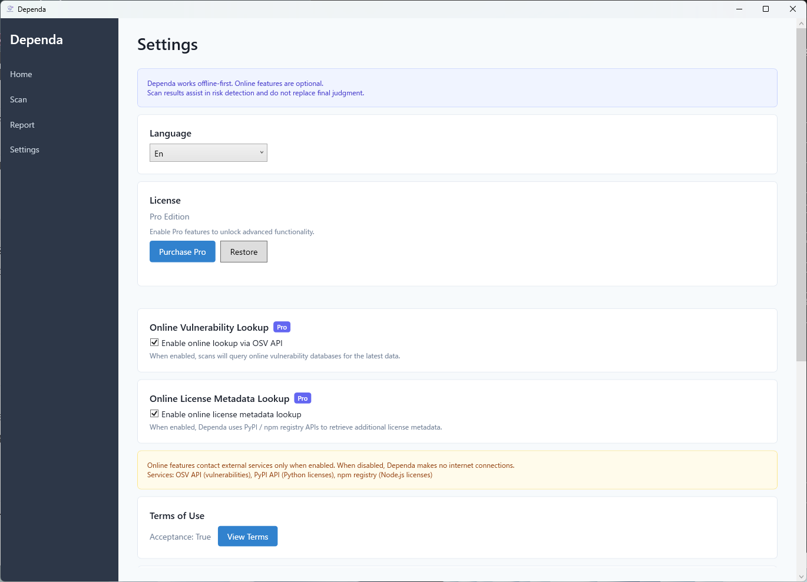

アプリケーションの動作をカスタマイズする（v2.0）
メイン画面の左下にある 歯車アイコン をクリックすると設定画面が開きます。

表示言語を選択できます。以下の 3 つから選べます。
| 選択肢 | 説明 |
|---|---|
| 日本語 | すべての UI とレポートが日本語で表示されます。 |
| English | すべての UI とレポートが英語で表示されます。 |
| システム言語 | OS の言語設定に従います。対応外の言語の場合は英語になります。 |
有効にすると、ローカル JSON データベースに加えて OSV API（Google が運営するオープンソース脆弱性データベース）にもオンラインで問い合わせを行います。これにより、最新の脆弱性情報を取得でき、検出精度が向上します。
この機能を利用するにはインターネット接続と Pro ライセンスが必要です。
有効にすると、ローカルデータベースにライセンス情報がないパッケージについて PyPI / npm / NuGet からライセンス情報を自動補完します。Unknown と判定されるパッケージが減り、ライセンス分析の精度が向上します。
| レジストリ | 対象 |
|---|---|
| PyPI | Python パッケージのライセンス情報 |
| npm | Node.js パッケージのライセンス情報 |
| NuGet | .NET パッケージのライセンス情報 |
この機能を利用するにはインターネット接続と Pro ライセンスが必要です。
初回起動時に同意した利用規約を再度確認できます。設定画面内の 「利用規約を表示」 ボタンをクリックしてください。
Pro ライセンスが有効な場合、以下の設定項目が追加で利用できます。
| 設定項目 | 説明 |
|---|---|
| オンライン脆弱性照合 | OSV API によるリアルタイム脆弱性検出 |
| オンライン補完 | PyPI / npm / NuGet からのライセンス情報自動取得 |
| 承認ワークフロー | レビュー結果の承認・差し戻し機能の有効化 |
| 複数プロジェクト | 複数プロジェクトの切り替え管理 |
設定は以下のパスに JSON 形式で保存されます。
%LocalAppData%\Dependa\settings.json通常は以下のようなパスになります。
C:\Users\<ユーザー名>\AppData\Local\Dependa\settings.json設定ファイルを手動で編集する場合は、アプリケーションを終了してから行ってください。アプリ起動中に編集すると変更が上書きされる場合があります。
Customize how the application works (v2.0)
Click the gear icon at the bottom-left of the main screen to open the Settings panel.

Choose the display language from the following three options:
| Option | Description |
|---|---|
| Japanese | All UI and reports are displayed in Japanese. |
| English | All UI and reports are displayed in English. |
| System Language | Follows the OS language setting. Falls back to English if the language is not supported. |
When enabled, queries the OSV API (an open-source vulnerability database operated by Google) in addition to the local JSON database. This provides access to the latest vulnerability data and improves detection accuracy.
This feature requires an internet connection and a Pro license.
When enabled, automatically supplements license information from PyPI / npm / NuGet for packages missing from the local database. This reduces the number of packages classified as Unknown and improves license analysis accuracy.
| Registry | Target |
|---|---|
| PyPI | Python package license information |
| npm | Node.js package license information |
| NuGet | .NET package license information |
This feature requires an internet connection and a Pro license.
You can review the terms of use that you agreed to during the first launch. Click the "Show Terms of Use" button in the Settings panel.
When a Pro license is active, the following additional settings are available:
| Setting | Description |
|---|---|
| Online Vulnerability Lookup | Real-time vulnerability detection via OSV API |
| Online Enrichment | Automatic license information retrieval from PyPI / npm / NuGet |
| Approval Workflow | Enable review result approval and return functionality |
| Multiple Projects | Manage and switch between multiple projects |
Settings are saved in JSON format at the following path:
%LocalAppData%\Dependa\settings.jsonTypically this resolves to:
C:\Users\<username>\AppData\Local\Dependa\settings.jsonIf you edit the settings file manually, close the application first. Changes may be overwritten if the app is running.